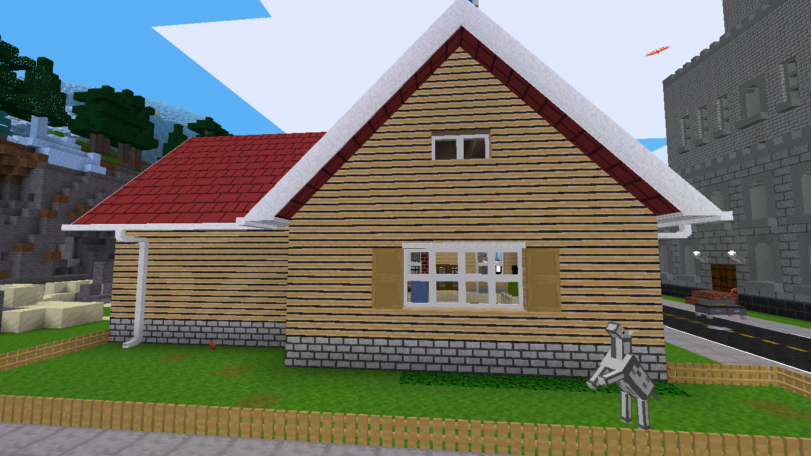

Here is the craft for the machine
Place your material in the machine and click on the style you want. The dark lines are good for lighter blocks and darker blocks should have the lighter lines.
- Minetest Forum Link - My Siding
- Github Link - Veiw Code
- Direct Download - mysiding.zip
- ContentDB - My Siding